Team AUPAIR
Biointelligence Lab, Seoul National University
- Principal Investigator
 |
Prof. Byoung-Tak Zhang Contact : (btzhang@bi.snu.ac.kr) Research Area : Cognitive Robotics, Episodic Memory, Hypernetworks |
- Participants
- Support Members
 |
Chung-Yeon Lee Contact : (cylee@bi.snu.ac.kr) Research Area : Schedule learning, Event Segmentation |
| 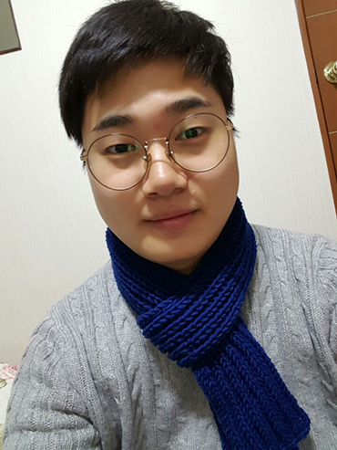 | Kibeom Kim Contact : (kbkim@bi.snu.ac.kr) Research Area : Reinforcement learning, Multiagent learning |
| 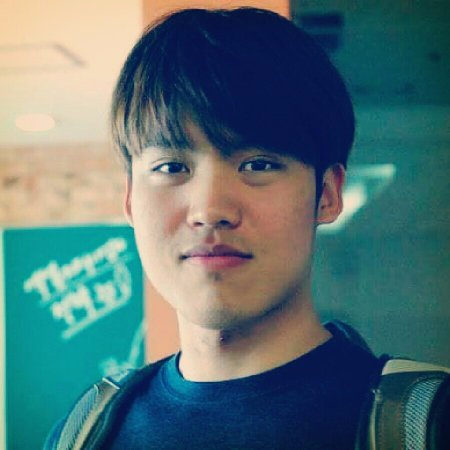 | Sungjae Cho Contact : (sjcho@bi.snu.ac.kr) Research Area : Language understanding, Mutlimodal learning |
| 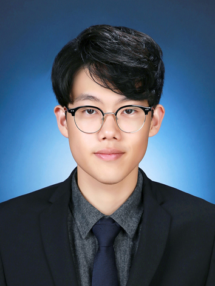 | Joonho Kim Contact : (joonhokim@bi.snu.ac.kr) Research Area : |
| 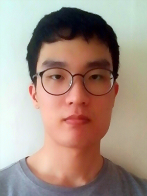 | EunChan Lee Contact : (lech9343@gmail.com) Research Area : |
| 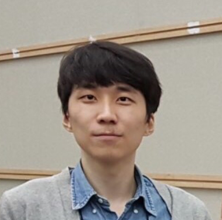 | Hyunkyu Lee Contact : (nevergreendd@naver.com) Research Area : |
| 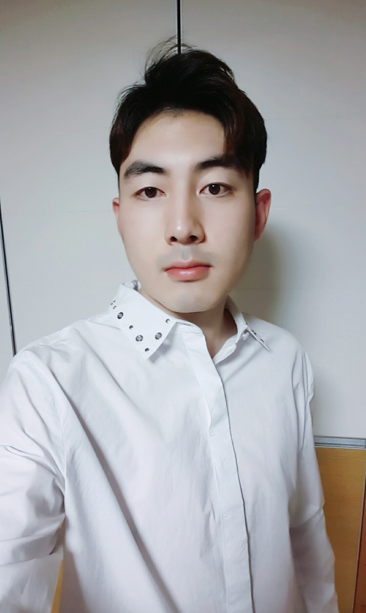 | JooHyun Jo Contact : (aksdmj@snu.ac.kr) Research Area : |
| 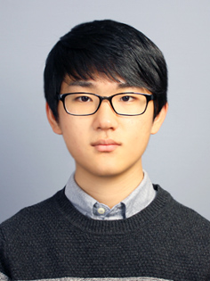 | Soo Hwan Kim Contact : (curtis05@snu.ac.kr) Research Area : |
| 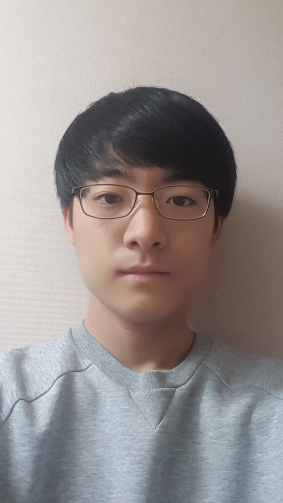 | JunHa Chun Contact : (nikriz@snu.ac.kr) Research Area : |
| HyunDo Lee Contact : (illhyhl1111@snu.ac.kr) Research Area : |
| Injun Hwang Contact : (hij0527@snu.ac.kr) Research Area : |
| Beom-Jin Lee Contact : (bjlee@bi.snu.ac.kr) Research Area : Navigation, SLAM, Self-Supervised Learning |
| 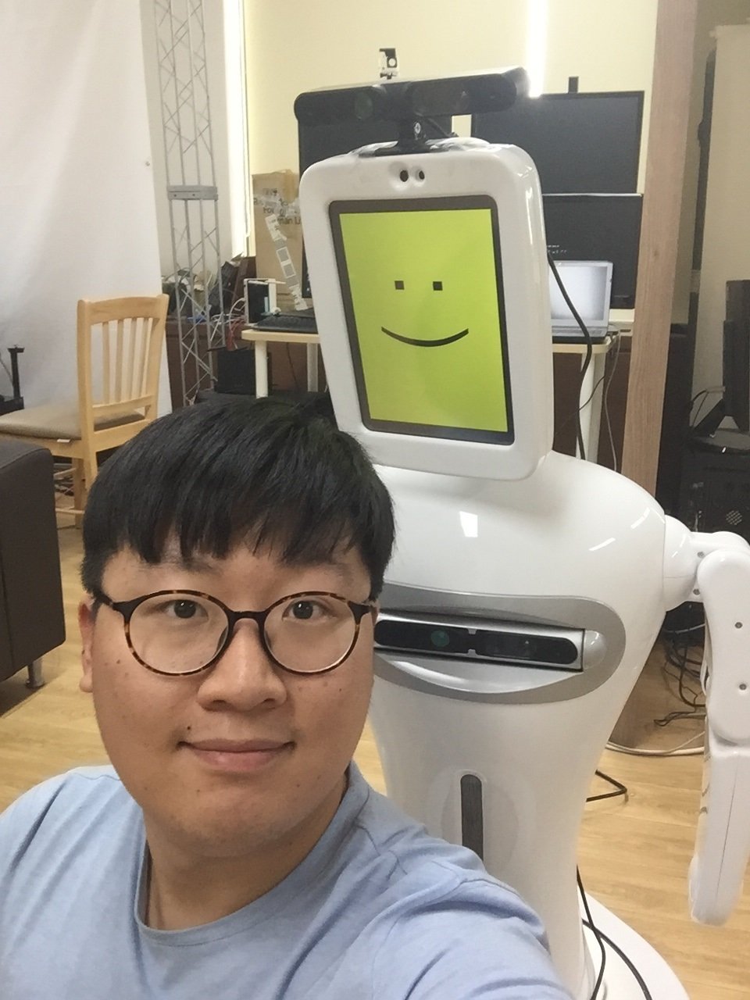 | Jinyoung Choi Contact : (jychoi@bi.snu.ac.kr) Research Area : Navigation, SLAM, Self-Supervised Learning |
| 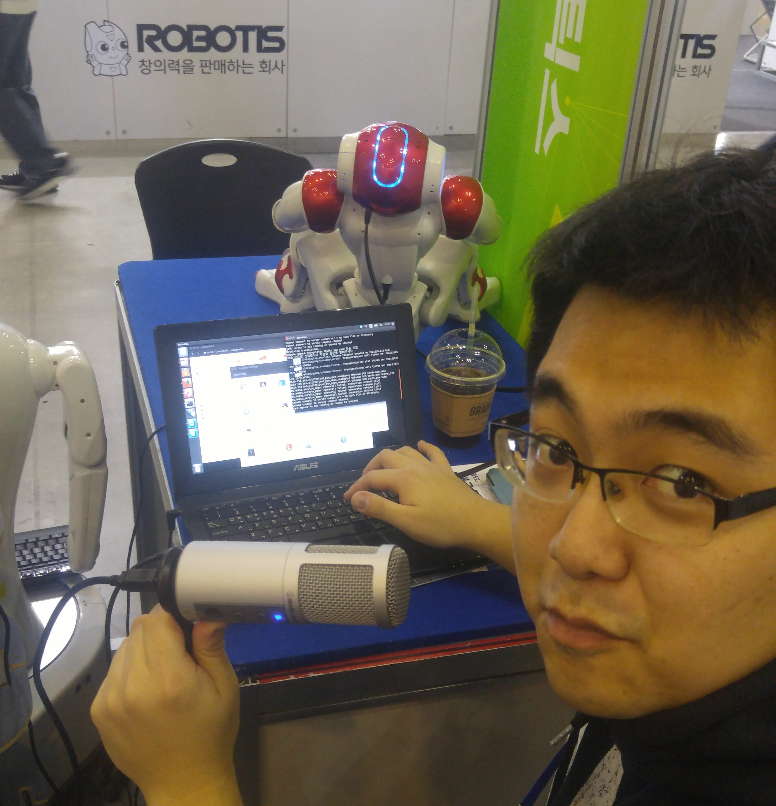 | Kyung-Wha Park Contact : (kwpark@bi.snu.ac.kr) Research Area : Emotion Recognition |
| 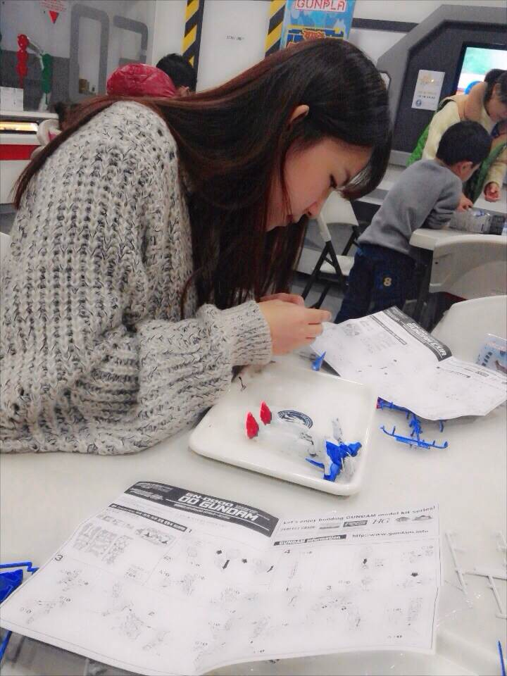 | Dasom Baek Contact : (dsbaek@bi.snu.ac.kr) Research Area : DNA computing, Molecular machine learning |
| 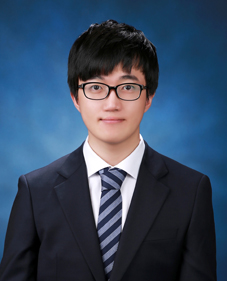 | DongSig Han Contact : (dshan@bi.snu.ac.kr) Research Area : Episodic memories learned for multimodal Q&A in personal robots |